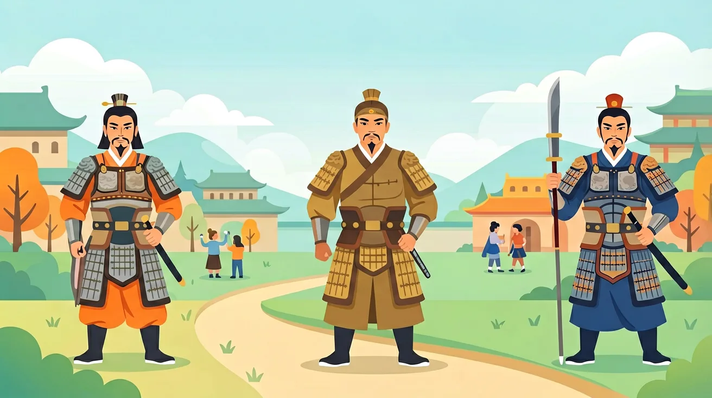
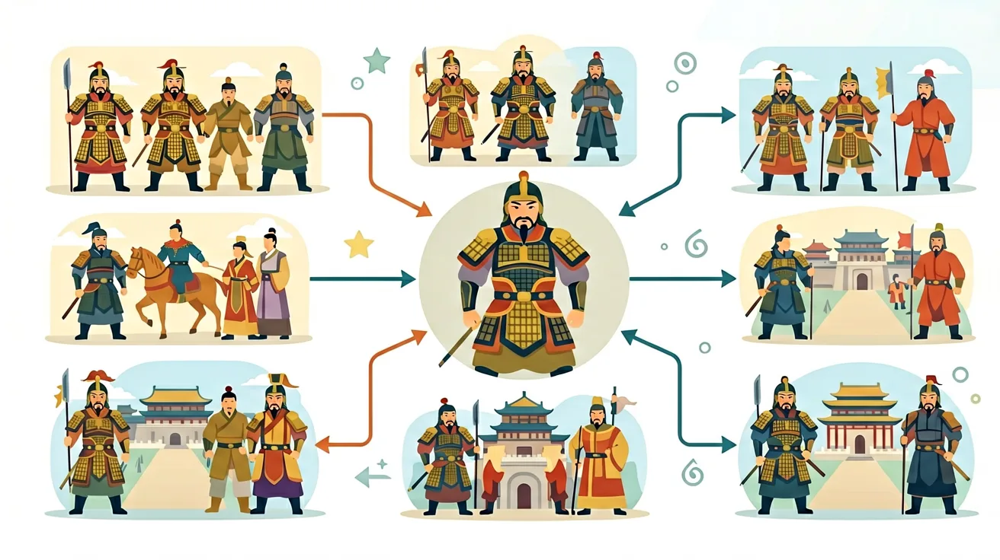

1. 你知道'三国'具体指哪三个国家吗？2. 大运河连接了哪两个古代大城市？3. 唐朝的'三省六部制'中'三省'分别负责什么职能？
1. 列举孝文帝改革的三项汉化措施 2. 分析安史之乱对唐朝的影响 3. 对比科举制与九品中正制的选拔标准差异
误区：认为三国时期是'魏蜀吴'同时并存。错因：忽略孙权称帝（229年）晚于曹丕（220年）和刘备（221年）。诊断：需明确三国形成是动态过程，208年赤壁战后仅是雏形，229年才完全形成。
迁移挑战：设计一张隋唐大运河与现代京杭大运河的对比表格，分析古今运河在功能、技术、管理三方面的差异，并探究其对区域经济发展的持续影响。
先独立作答，再点选项查看对错与错因。
《齐民要术》记载的'耕锄不以水旱息功'反映了当时
敦煌莫高窟第220窟的'维摩诘经变画'中出现中原服饰，这说明
唐玄宗时期粟特人安禄山担任节度使反映
东晋____制度使'上品无寒门，下品无势族'
答案：九品中正
士族垄断选官
隋朝____的创立打破了士族垄断
答案：科举制
选官制度变革
南朝《世说新语》大量记载清谈内容，说明
对比邺城（曹魏都城）与扬州（唐代商业中心）的兴衰轨迹
1. 错误认为"三国鼎立"是同时存在的三个国家：学生常将魏蜀吴的建立时间混淆，实际上曹魏220年建立时，刘备尚未称帝（221年），孙权更迟至229年才正式建国。这种错误源于对《三国演义》文学叙事的误解，历史事实上三方政权存在时间差近十年，且疆域始终动态变化，如荆州在208年赤壁之战后经历多次易主。
2. 混淆九品中正制与科举制的本质区别：有学生将魏晋的九品中正制视为科举制雏形，实则前者是门阀世族的选官工具（如太原王氏连续九代出任三公），后者在隋唐才打破世袭垄断。错误根源在于简化了选官制度的演变过程，忽略了大业元年（605年）进士科设立才是科举制度化的标志。
3. 高估安史之乱后唐朝的中央集权程度：部分学生认为藩镇割据始于安史之乱（755-763年），事实上代宗时期河朔三镇（成德、魏博、卢龙）仍保持半独立状态，直到唐末黄巢起义（875-884年）后节度使才完全失控。这种误解源于对"开元盛世"与"藩镇之祸"的二元对立认知，未注意到德宗贞元年间（785-805年）朝廷仍能调动部分藩镇兵力。
1. 敦煌莫高窟数字化工程：运用隋唐壁画中的矿物颜料成分分析（如青金石来自阿富汗），现代光谱技术已复原61幅壁画的原貌色彩。2023年敦煌研究院与腾讯合作建立的数字敦煌资源库，其色彩校准标准就基于对天宝年间（742-756年）颜料配比的考古数据。
2. 大运河申遗中的水文考古：2014年大运河成功申遗时，水利专家通过分析唐代漕运记录（如《元和郡县图志》载每年运粮400万石），结合洛阳含嘉仓遗址的碳化谷物分布，精确计算出通济渠段的古代航运承载力，为现代航道整治提供参照。
3. 日本正仓院文物修复：奈良时代（相当于盛唐）传入日本的螺钿紫檀五弦琵琶，其修复工艺需要参照《唐六典》记载的"平脱"技法。2019年东京国立博物馆的修复团队，正是根据该书卷二十二"少府监"条记载的漆器制作流程，成功复原了失传的唐代镶嵌工艺。
1. 问题：北魏孝文帝改革中"断北语"政策为何选择洛阳方言而非长安方言作为标准音？分析线索：注意534年北魏分裂为东魏（邺城）、西魏（长安）前的政治格局，结合《魏书·咸阳王禧传》记载元宏"欲使卿等子孙渐染华风"，思考洛阳作为东汉旧都的文化象征意义，对比长安当时受鲜卑语影响的程度。
2. 问题：安史之乱后江淮地区为何能成为唐朝财政支柱？分析线索：查阅《新唐书·食货志》关于刘晏改革漕运的记载，对比天宝年间与元和年间（806-820年）的税赋比例，结合扬州出土的波斯银币数量，思考运河经济带与海上丝绸之路的联动关系。
从东汉末年豪强地主崛起开始，九品中正制固化门阀政治，直到北魏孝文帝太和改制（486年）尝试打破这一格局。接着隋炀帝开创进士科，但真正转折发生在唐太宗贞观年间（627-649年），《氏族志》重排世家座次时首次将皇族列为一等。安史之乱暴露了府兵制崩溃的隐患，德宗建中元年（780年）两税法改革标志着土地国有化转向承认私有，这与敦煌文书S.514显示的大历四年（769年）民间契约激增相印证。最后看文化交融，法门寺地宫出土的伊斯兰玻璃器与秘色瓷同藏（874年封存），证明晚唐仍保持开放态势，这种多元性恰恰源于魏晋南北朝三百年的民族大融合。从士族政治到科举社会，从均田制到两税法，从五胡乱华到长安胡风，这段历史的主线始终是制度创新与文化整合的螺旋上升。
❓ 为什么三国时期英雄辈出，后来却越来越少了？
❓ 隋朝明明很强盛，为什么只存在了38年就灭亡了？
❓ 唐朝的开放包容具体体现在哪些地方？
学完这一课，这些问题你都能自信地回答。
🎯 能说出三国两晋南北朝时期的主要政权更替顺序
🎯 能分析隋唐时期科举制对社会的深远影响
🎯 能判断唐朝对外开放政策的具体表现及其意义
✅ 该时期完成民族大融合，为隋唐统一奠定基础
💡 忽视少数民族政权对中华文明的贡献
✅ 孝文帝改革在5世纪，科举制确立在7世纪隋唐时期
💡 对两次重要改革的时间跨度缺乏概念
口诀：三国分晋南北朝，隋唐一统盛世到
类比：像拼乐高：三国是分散的积木块，隋唐是拼好的壮丽城堡
下列哪项不是北魏孝文帝改革的内容？
唐朝对外交流的典型事件是？
（高考题）隋朝大运河以洛阳为中心，北达涿郡，南至余杭，其主要功能是？
（迁移题）当今公务员考试制度与古代科举制的本质共同点是？
（史实题）唐朝处理民族关系的典型方式是？

